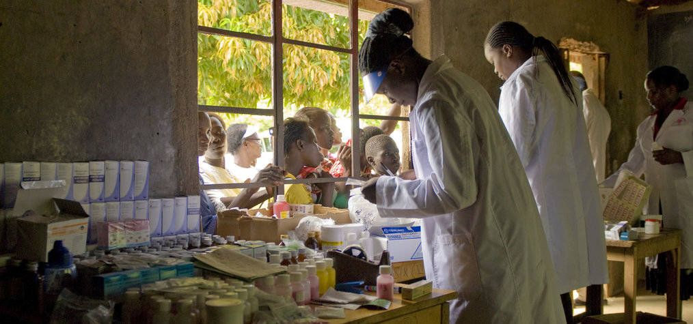

search
Lutter contre les moustiques
Les anophèles
Sans moustiques, pas de propagation du paludisme. Et les moustiques pourraient aussi dire la même chose pour les humains.
Chez l'Homme, le paludisme est seulement transmis par des moustiques appartenant à un genre appelé Anophèles et c’est la femelle qui transmet le parasite. En vol, ils font très peu de bruit par rapport aux autres moustiques qui nous attaquent. Les espèces d'anophèles vivent de manières différentes suivant les pays.
On dit que le moustique Anophèle est le vecteur du paludisme car il transmet cette maladie.
Des modes de vie différents
En Afrique, les espèces les plus importantes se reproduisent à partir de larves qui se développent dans de l'eau stagnante. Les adultes se reposent dans nos maisons et piquent aussi à l'intérieur des maisons.
Les larves de moustiques se développent dans de l'eau stagnante.
En Asie et en Amérique latine, de nombreuses espèces d’anophèles vivent dans les forêts, se reproduisent dans l'ombre et piquent à l'extérieur uniquement. D'autres espèces, par contre, ont un mode de vie qui ressemble aux espèces africaines. La lutte contre les moustiques (on parle de lutte anti-vectorielle) ne peut donc pas être la même partout dans le monde.
D'abord prévenir
La prévention est toujours la meilleure approche. Le contrôle du paludisme a été réussi en Europe et aux États-Unis en asséchant les sites de reproduction des moustiques et en ayant des protections pour éviter l’entrée des moustiques dans les maisons. La lutte chimique n'a joué qu'un rôle mineur. Ces méthodes sont efficaces lorsque les sites de reproduction des moustiques sont bien définis, que la société est bien organisée et a des ressources financières suffisantes.
La lutte chimique
Dans les pays où les moustiques piquent et se reposent à l'intérieur des maisons, la pulvérisation des maisons peut être efficace. Le produit chimique DDT a été utilisé en grande échelle en Asie, en Amérique latine et en Afrique, mais les moustiques ont réussi à s'en protéger en Asie et dans certaines régions d'Afrique.
Aujourd'hui, des produits comme les pyréthroïdes, la perméthrine, la deltaméthrine, la lamdacyhalothrin... sont souvent utilisés. Ils sont faiblement toxiques pour les humains mais très toxiques pour les moustiques et ils ne sentent pas mauvais.
Les larves de moustiques se développent dans de l'eau stagnante.
Les moustiquaires imprégnées
Les moustiquaires imprégnées d’insecticide sont un grand progrès. Les moustiquaires empêchent que les personnes puissent être piquées lorsqu'elles dorment.
Les larves de moustiques se développent dans de l'eau stagnante.
Les larvicides
Les larvicides sont des substances chimiques ou biologiques qui peuvent être utilisées pour tuer les larves de moustiques. Ils sont souvent utilisés dans les zones marécageuses afin de freiner le développement des moustiques. Cette technique est compliquée car les larvicides doivent être sélectifs, c'est-à-dire qu'ils doivent bien détruire les larves de moustiques mais ne doivent pas avoir d'effet sur les larves des autres insectes et des petits crustacés aquatiques par exemple. De plus, les larves de moustiques peuvent s'adapter aux produits utilisés et développer des mécanismes de résistances. Les scientifiques surveillent donc très régulièrement leur efficacité et continuent de chercher des produits plus efficaces.